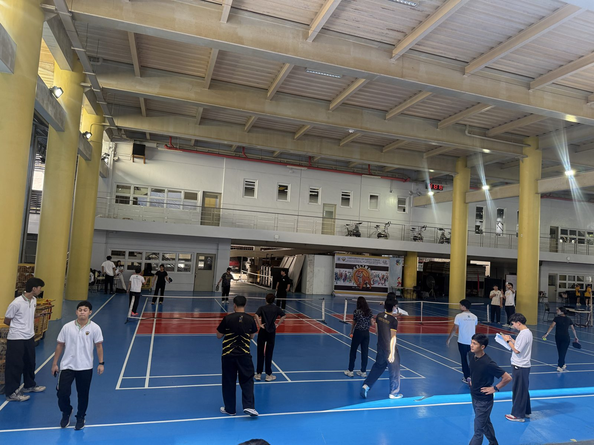
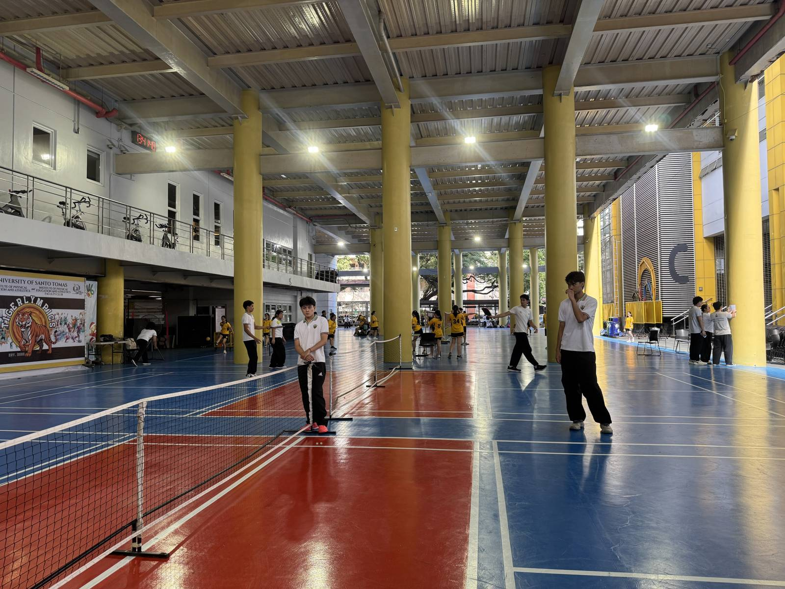

Section 07 of 12
Equipment and Facilities
We used the university's courts and nets. The players brought their own paddles and balls, and we printed the score sheets.
Facilities
- Venue
- UST QPav practice gym, University of Santo Tomas
- Courts
- 2 courts, one per pool (Court 1: Pool A and the Final, Court 2: Pool B and the third-place match)
- Nets
- 2 nets owned by UST, already set up at the venue




Equipment
| Item | Quantity | Source |
|---|---|---|
| Nets | 2 | UST, already at the venue |
| Paddles | 1 per student | Each student brought one, as our professor asked |
| Balls | 1 per student | Each student brought one, as our professor asked |
| Score sheets | 2 | Printed by our group |
What we did not have
We had no scorecards to show the score to players, so the referees called the score out loud before every serve. We also had no awards. Both are on the Problems and Solutions page.